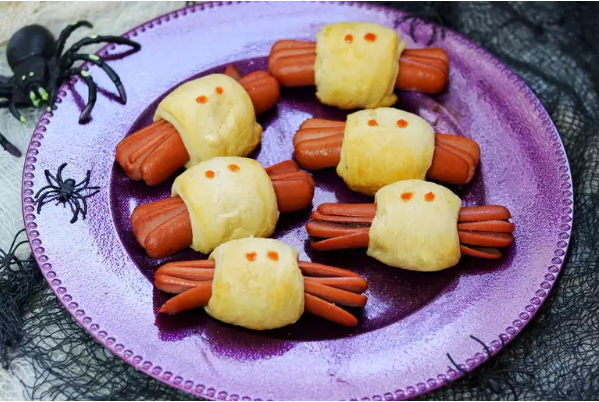

Click Me to Go Back
Spooky Spider Halloween Hot Dogs

These Halloween hot dogs use crescent rolls to make a spooky twist on pigs in a blanket.
Kids love them. Plus, they are an easy snack for a holiday party.
Ingredients
- 1 (8 ounce) can refrigerated crescent rolls
- 8 hot dogs
- 2 tablespoons ketchup, or to taste
Directions
- Preheat the oven to 375 degrees F (190 degrees C).
- Unroll crescent dough. Pinch or press the perforation between the triangles to get four rectangular pieces.
Cut rectangles in half lengthwise, making eight narrow strips.
- Make a 2-inch slice through the center of one end of a hot dog.
Cut two more 2-inch slices on either side of that slice, so the "legs" are about the same thickness. Repeat on other end. Cut "legs" into remaining hot dogs.
- Roll a crescent strip around center of each dog.Place spider dogs on an ungreased baking sheet.
- Bake in the preheated oven until golden brown, about 11 minutes.
Dip a chopstick into some ketchup and dot "eyes" onto each spider. Serve with remaining ketchup.